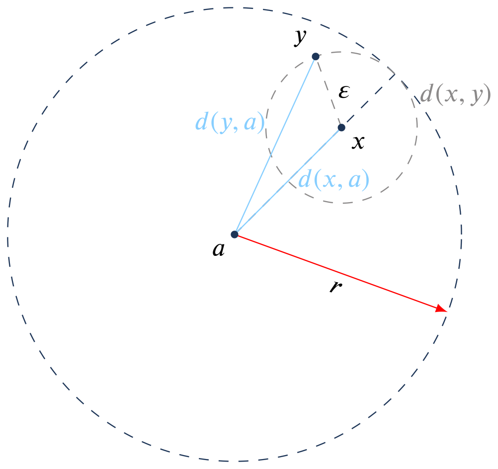
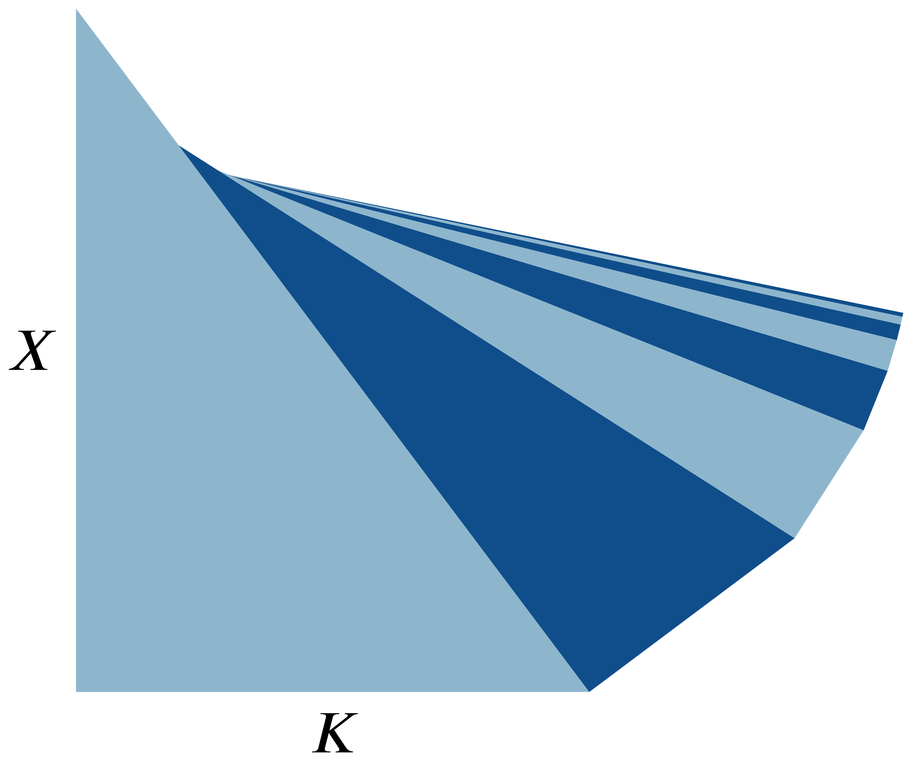
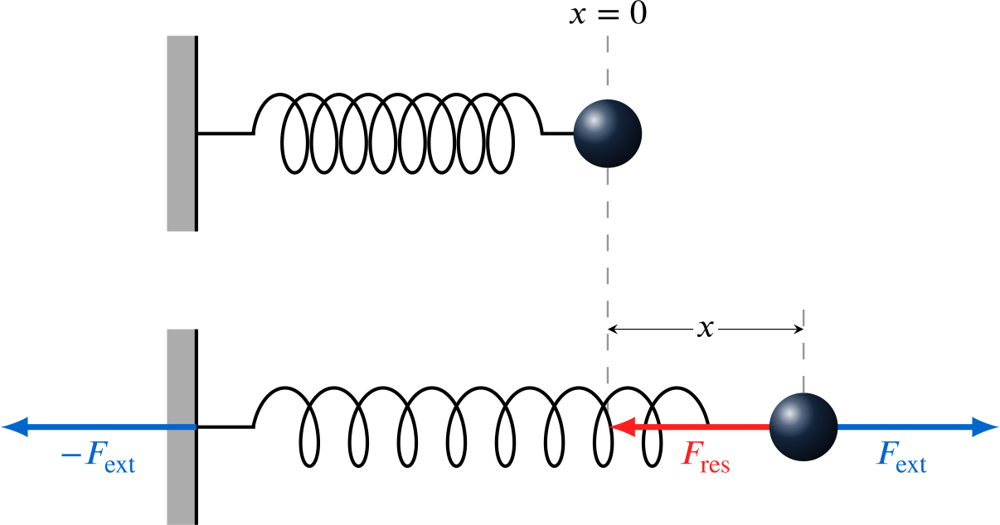
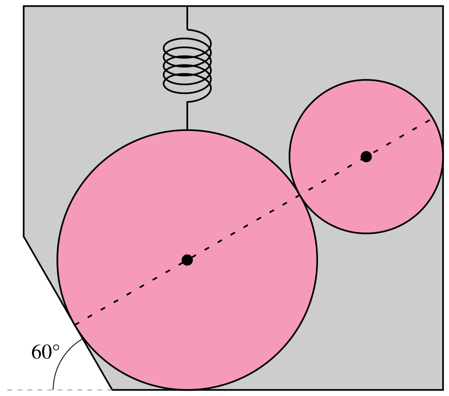
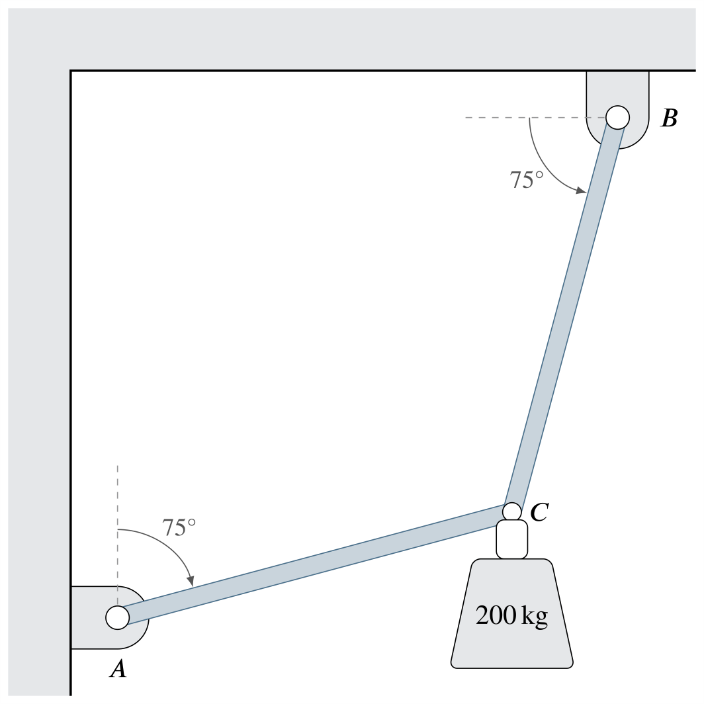
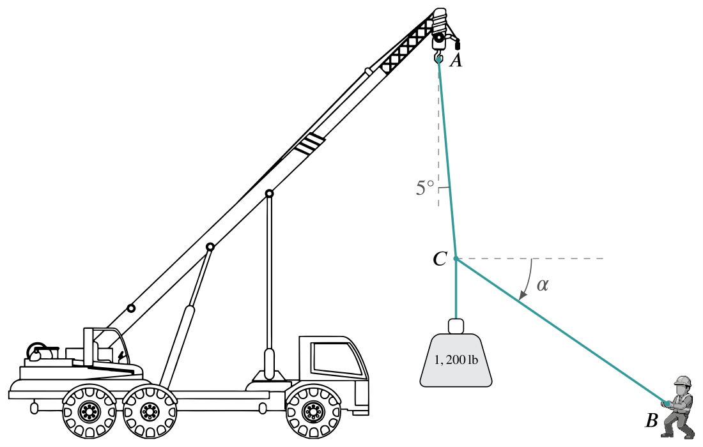
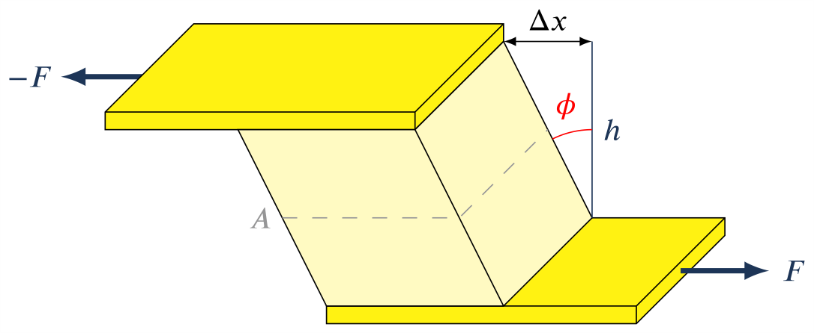
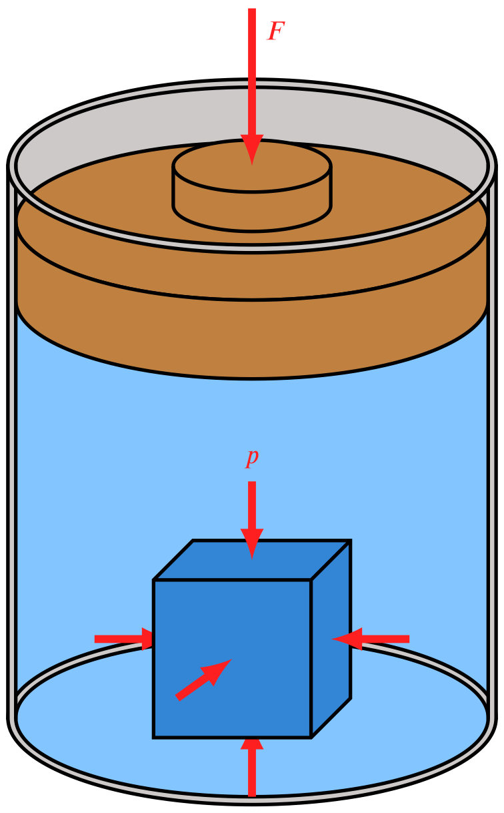
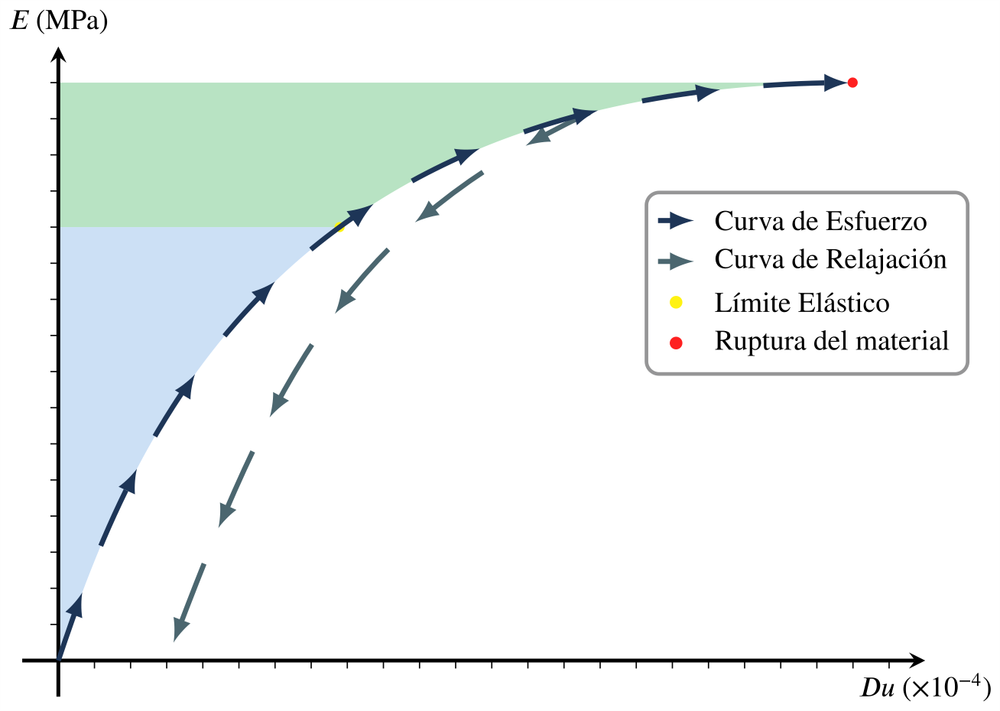
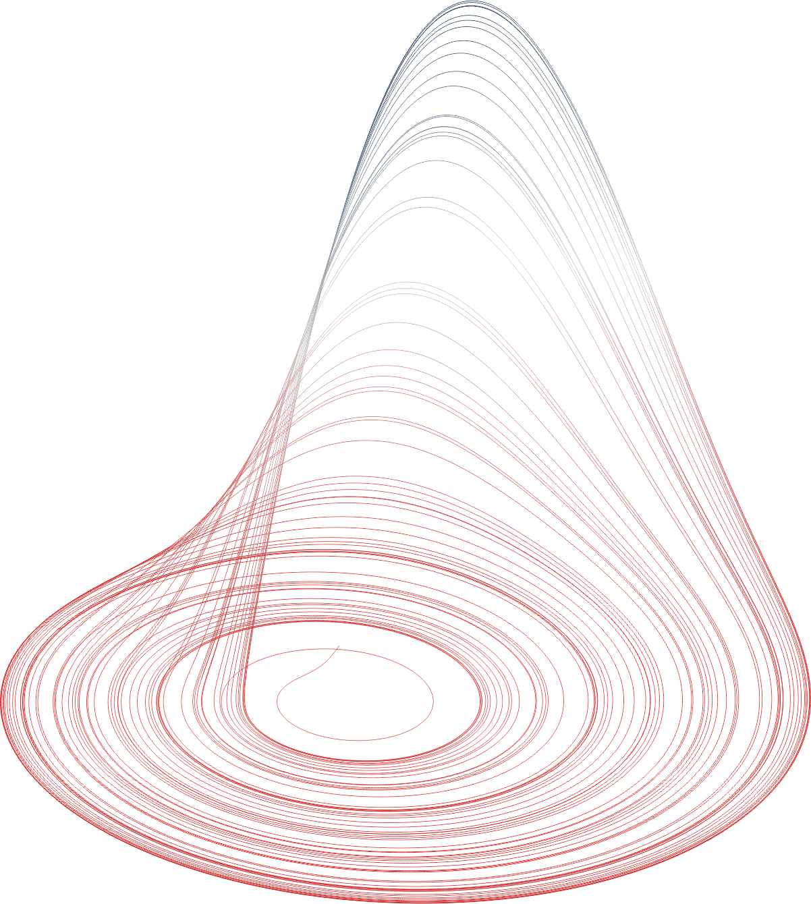

Arte Vectorial Paramétrico
Renderizado nativo que garantiza calidad infinita para impresión académica.
I. Matemáticas Puras y Topología

Topología de Espacios Métricos
Representación de vecindades (bolas abiertas), métricas y la desigualdad del triángulo.
Descargar PDFCargando código fuente...
Serie Geométrica Paramétrica
Programación iterativa en TikZ ilustrando la convergencia de una espiral.
Descargar PDFCargando código fuente...II. Física Clásica y Estática

Oscilador Armónico (Ley de Hooke)
Análisis vectorial en 1D mostrando fuerzas restauradoras respecto al punto de equilibrio.
Descargar PDFCargando código fuente...
Esferas en Equilibrio Estático
Diagrama de cuerpo rígido sobre superficies inclinadas combinando fuerzas elásticas.
Descargar PDFCargando código fuente...
Tensión y Equilibrio de Partícula
Análisis vectorial de cables y tensores soportando cargas suspendidas en muros.
Descargar PDFCargando código fuente...
Análisis Vectorial en Grúa
Análisis de cargas y tensores ilustrativo para libros de texto de estática.
Descargar PDFCargando código fuente...III. Mecánica de Materiales

Deformación por Esfuerzo Cortante
Esquema tridimensional ilustrando el desplazamiento y los ángulos de cizalla pura.
Descargar PDFCargando código fuente...
Presión Hidrostática en Cilindro
Proyección isométrica con transparencias y vectores de fuerza sobre un sólido confinado.
Descargar PDFCargando código fuente...
Curva de Esfuerzo-Deformación
Análisis de límite elástico con trazado asintótico y sombreado de áreas bajo la curva.
Descargar PDFCargando código fuente...IV. Soluciones Numéricas y EDOs

Atractor de Rössler en 3D
Gráfica vectorial generada a partir del parseo directo de un archivo .txt con la solución numérica del sistema de ecuaciones.
Descargar PDFCargando código fuente...V. Estructuras a Gran Escala

Tabla Periódica de los Elementos
Organización de decenas de nodos con coordenadas relativas y macros personalizadas.
Descargar PDFCargando código fuente...